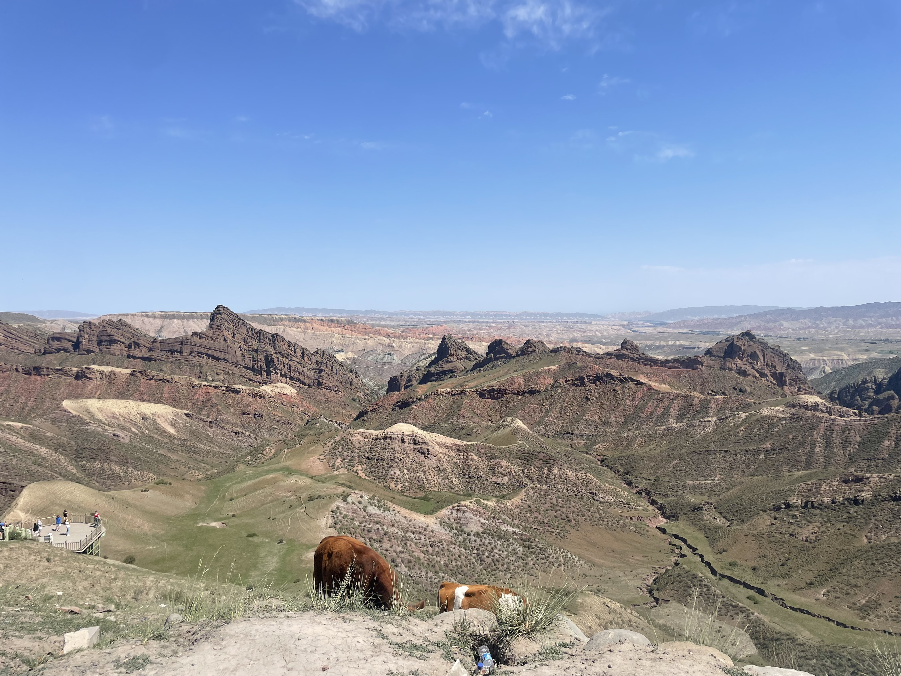
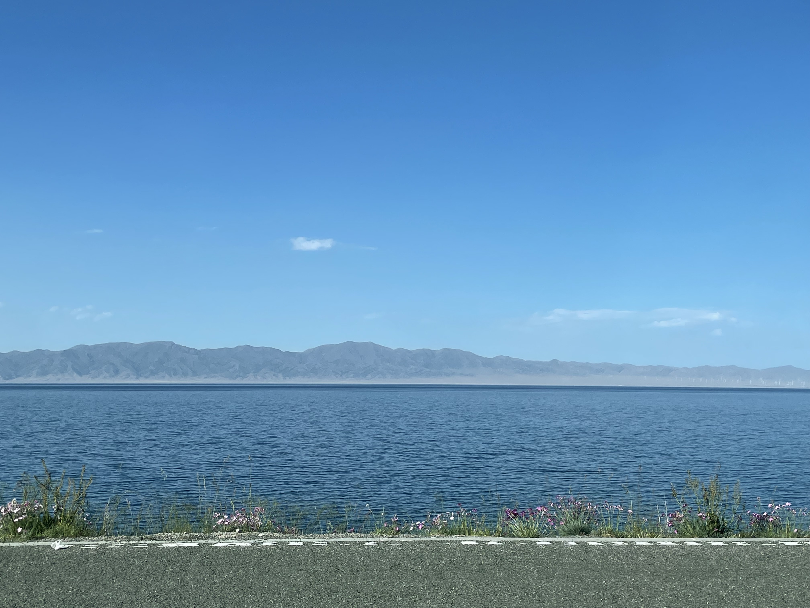
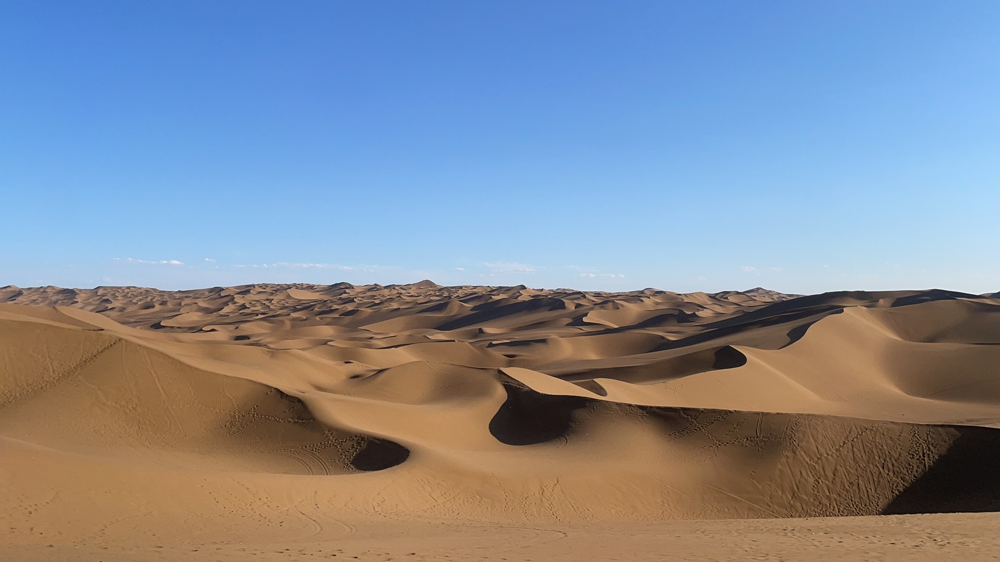
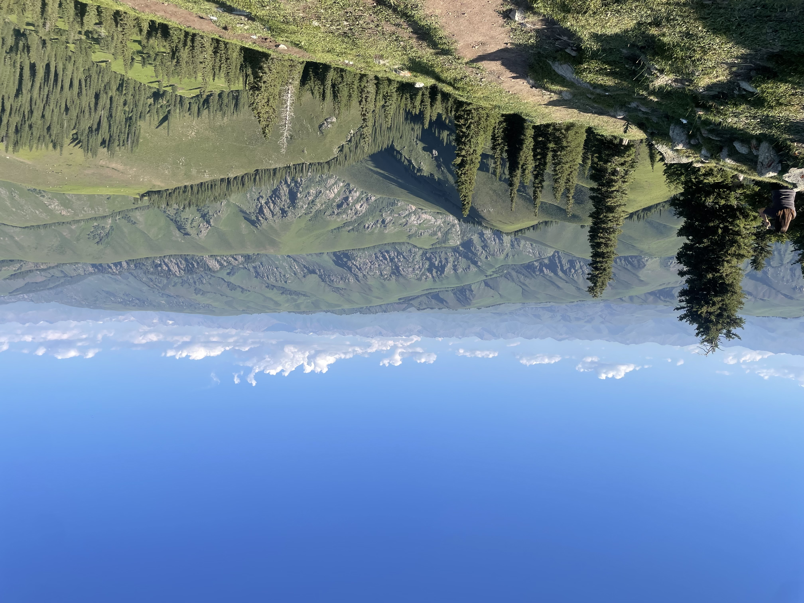

Artist Statement
Xin Jiang is the largest provincial-level region in China, and its landscape feels almost unreal in how much it holds at once. In one trip you can move from dry desert roads to snow-covered peaks, from quiet farmland to sharp mountain ranges, from wide open basins to volcanic-looking rock and cratered ground. I spent 20 days driving across Xin Jiang and photographing what I saw along the way. These images are quick snapshots—taken in passing, but together they become a kind of map: not just “pretty views,” but a collection of landforms, textures, and geological time caught in the moment.